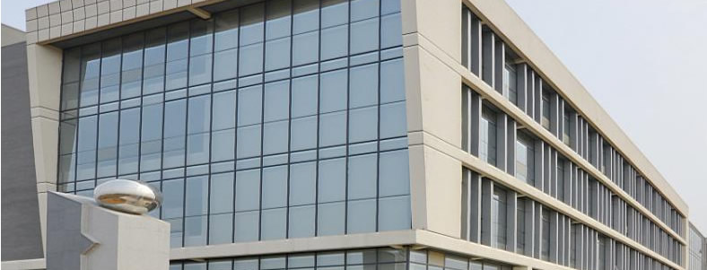

ABOUT US


地 址：江苏省南京市玄武区玄武湖
电 话：0555-88888888
咨询QQ：88888888
网 址：www.baidu.com
邮 箱：admin@admin.cn
邮 编：10000
 关于我们 CASE
关于我们 CASE
 当前位置:首页 > 案例展示
当前位置:首页 > 案例展示 

十余年间，迅达康依托华中农业大学、南京农业大学、华南农业大学和山东农业大学等高等院校的专家学者，山东省动物疾病 预防与控制中心等知名科研单位，以"专注于动保核心领先技术，持续为用户创造价值"为研发理念，成功推出了一系列近百 个高科技产品，均以卓越的功效和优良的品质赢得了广大用户的信赖。
公司在飞速发展的过程中，始终坚持"让养殖更成功"的企业使命和"真诚、责任、学习、执行、共赢"的核心价值观， 获得了广大客户、供应商、政府主管部门和高校的赞誉、肯定和大力支持，先后被评为国家级守合同重信用企业、省级高新 技术企业、省级著名商标、市级农业龙头企业、先进民营企业等荣誉；承建"阳离子抗菌肽的研制与开发"、"新型球虫卵 杀灭剂'卵杀灵'的研究与应用"、"香菇多糖可溶性粉在猪健康养殖中的研究与应用"、"新鱼腥草素钠预混剂在猪健康养 殖中的研究与应用"、"鸡大肠杆菌区域性实时药敏动态检测及高效药物研发"等项目，现有省级科研课题4个，市级科研课 题10余个；与华中农业大学等十余家高校签
公司在飞速发展的过程中，始终坚持"让养殖更成功"的企业使命和"真诚、责任、学习、执行、共赢"的核心价值观， 获得了广大客户、供应商、政府主管部门和高校的赞誉、肯定和大力支持，先后被评为国家级守合同重信用企业、省级高新 技术企业、省级著名商标、市级农业龙头企业、先进民营企业等荣誉；承建"阳离子抗菌肽的研制与开发"、"新型球虫卵 杀灭剂'卵杀灵'的研究与应用"、"香菇多糖可溶性粉在猪健康养殖中的研究与应用"、"新鱼腥草素钠预混剂在猪健康养 殖中的研究与应用"、"鸡大肠杆菌区域性实时药敏动态检测及高效药物研发"等项目，现有省级科研课题4个，市级科研课 题10余个；与华中农业大学等十余家高校签
公司在飞速发展的过程中，始终坚持"让养殖更成功"的企业使命和"真诚、责任、学习、执行、共赢"的核心价值观， 获得了广大客户、供应商、政府主管部门和高校的赞誉、肯定和大力支持，先后被评为国家级守合同重信用企业、省级高新 技术企业、省级著名商标、市级农业龙头企业、先进民营企业等荣誉；承建"阳离子抗菌肽的研制与开发"、"新型球虫卵 杀灭剂'卵杀灵'的研究与应用"、"香菇多糖可溶性粉在猪健康养殖中的研究与应用"、"新鱼腥草素钠预混剂在猪健康养 殖中的研究与应用"、"鸡大肠杆菌区域性实时药敏动态检测及高效药物研发"等项目，现有省级科研课题4个，市级科研课 题10余个；与华中农业大学等十余家高校签